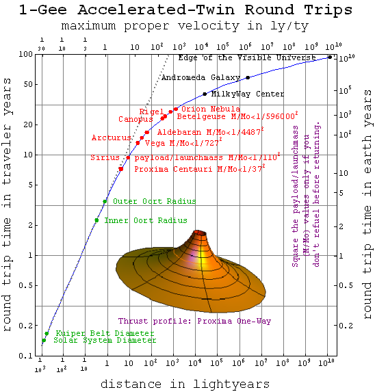

Regardless of how it is achieved, a propulsion system that could produce acceleration continuously from departure to arrival would be the fastest method of travel. A constant acceleration journey is one where the propulsion system accelerates the ship at a constant rate for the first half of the journey, and then decelerates for the second half, so that it arrives at the destination stationary relative to where it began. If this were performed with an acceleration similar to that experienced at the Earth's surface, it would have the added advantage of producing artificial "gravity" for the crew. Supplying the energy required, however, would be prohibitively expensive with current technology.[37]

From the perspective of an onboard observer, the crew will feel a gravitational field opposite the engine's acceleration, and the universe ahead will appear to fall in that field, undergoing hyperbolic motion. As part of this, distances between objects in the direction of the ship's motion will gradually contract until the ship begins to decelerate, at which time an onboard observer's experience of the gravitational field will be reversed.
When the ship reaches its destination, if it were to exchange a message with its origin planet, it would find that less time had elapsed on board than had elapsed for the planetary observer, due to time dilation and length contraction. The result is an impressively fast journey for the crew.